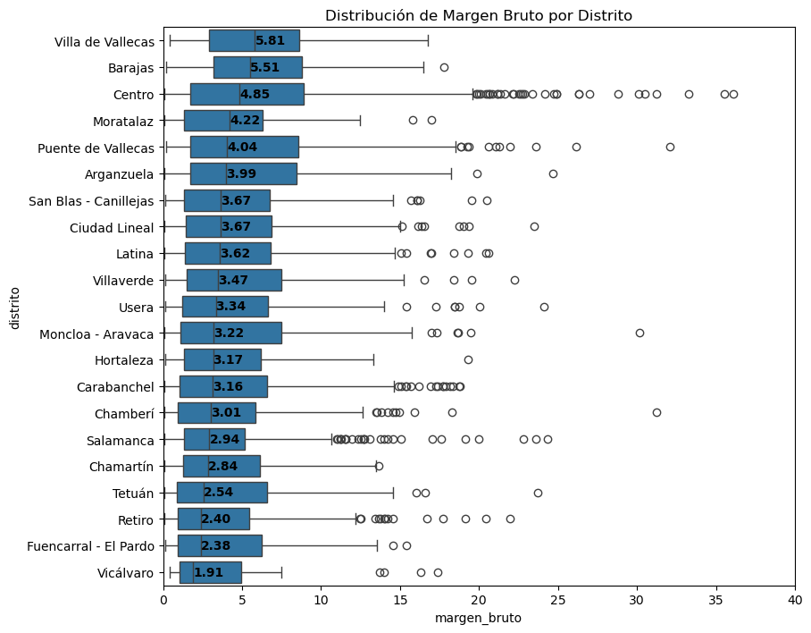
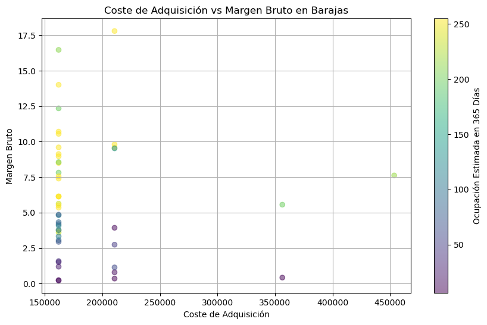
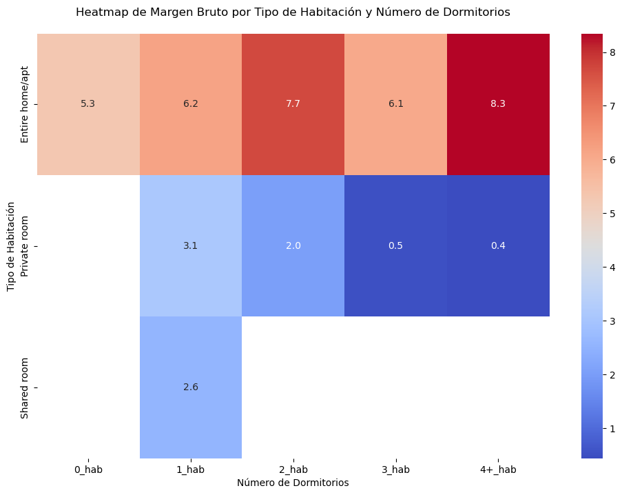

Identificación de Oportunidades de Inversión en Alquiler Turístico - Madrid
Existen inmuebles con rentabilidades del 8-20% y ocupación superior a 200 días anuales en distritos no tradicionales.
Villa de Vallecas, Barajas y Centro son los 3 distritos principales para maximizar ROI.
Inmuebles de 2-3 habitaciones, capacidad 4+ personas, alquiler completo del apartamento.
En Barajas es posible adquirir propiedades rentables por menos de 200.000€.
Insight: Los inmuebles más rentables se concentran en distritos periféricos con menor competencia pero alta demanda turística.

Gráfico generado en el análisis: Distribución de Margen Bruto por Distrito
Priorizar inversiones en Villa de Vallecas, Barajas y Centro para maximizar rentabilidad. Enfocarse en propiedades de 2-3 habitaciones con capacidad para 4+ personas.
Insight: La ocupación se maximiza con inmuebles de mayor capacidad en ubicaciones estratégicas cerca de transporte.

Análisis específico del distrito de Barajas - Scatter plot de Coste vs Rentabilidad coloreado por ocupación
El alquiler completo del apartamento supera consistentemente al alquiler por habitaciones en rentabilidad, excepto en casos específicos de Barajas.

Heatmap: Margen Bruto por Tipo de Habitación y Número de Dormitorios
| Tipo de Alquiler | 2 Habitaciones | 3 Habitaciones | 4+ Habitaciones | Recomendación |
|---|---|---|---|---|
| Apartamento Completo | 12.5% | 14.2% | 11.8% | Prioritario |
| Habitación Privada | 8.3% | 9.1% | 10.2% | Secundario |
| Habitación Compartida | 5.2% | 6.1% | 7.4% | No recomendado |
Cada distrito presenta características únicas que requieren estrategias de inversión diferenciadas.
| Distrito | Habitaciones Óptimas | Capacidad | Tipo Alquiler | Rentabilidad Esperada |
|---|---|---|---|---|
| Villa de Vallecas | 2-3 hab | 4+ personas | Completo | 15.2% |
| Barajas | 2-4 hab | 4+ personas | Habitaciones | 12.8% |
| Centro | 2 hab | 4 personas | Completo | 11.5% |
| Puente de Vallecas | 3 hab | 4+ personas | Completo | 10.8% |
| Moratalaz | 0-2 hab | 2-4 personas | Completo | 9.8% |
Los mapas de calor revelan patrones geográficos claros de rentabilidad y ocupación que guían la estrategia de inversión.
Las zonas más calientes (rojas) indican mayor concentración de propiedades rentables
Intensidad de color correlaciona con días de ocupación anual
Puntos amarillos: Propiedades con +20% rentabilidad y +200 días ocupación
Análisis realizado con datos del mercado inmobiliario de Madrid
Fecha del informe: Septiembre 2025